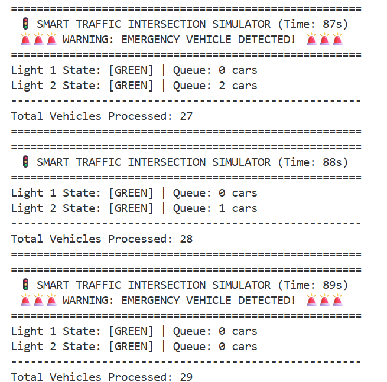
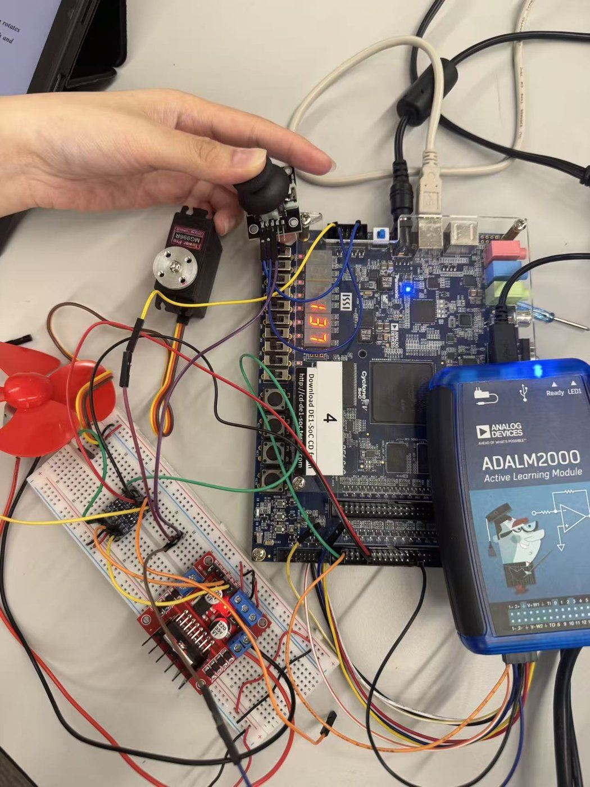

Hardware meets software.软硬件协同设计。From FPGA fabric to real-time DSP.从 FPGA 逻辑到实时 DSP。
I'm an Electrical Engineering undergraduate at Northeastern University, focused on embedded systems, real-time audio, and FPGA-based robotics. I came to Northeastern through the NU-Immerse academic-English program. In my major coursework I've designed logic on FPGAs, built an autonomous walking robot, prototyped analog circuits, and written object-oriented C++; on internship I built a full-duplex acoustic echo canceller in Python for a robot intercom. Outside class, I teach math, physics, and engineering through LEGO robotics.我是东北大学电气工程专业的本科生，专注于嵌入式系统、实时音频与基于 FPGA 的机器人。我通过 NU-Immerse 学术英语项目进入东北大学。在专业课程中，我在 FPGA 上设计数字逻辑、搭建了一台自主步行机器人、制作并分析模拟电路，并编写面向对象的 C++；在实习中，我用 Python 为机器人对讲系统构建了一套全双工声学回声消除系统。课外，我还通过乐高机器人课程教授数学、物理与工程。
Education教育
Northeastern University
Expected May 2028预计 2028 年 5 月毕业
Internship Experience实习经历
Where the coursework met a real product constraint.课堂所学第一次面对真实的产品约束。
Hangzhou Boomy Intelligent Technology Co., Ltd.杭州景业智能科技股份有限公司
- Designed and implemented the robot-side full-duplex acoustic echo cancellation stack for a robot-to-operator intercom on a Rockchip RK3588S SoC: a multichannel frequency-domain Kalman adaptive filter with Hammerstein saturation-basis modeling of loudspeaker nonlinearity, decision-directed Wiener residual suppression, and minimum-statistics noise reduction — 3,700 lines of Python (numpy / scipy) across 16 modules.为机器人与操作员之间的对讲系统设计并实现了机器人端的全双工声学回声消除（AEC）软件栈，运行于瑞芯微 RK3588S SoC：多通道频域卡尔曼自适应滤波器、建模扩声器非线性的 Hammerstein 饱和基扩展、判决引导的维纳残余抑制，以及基于最小值统计的降噪 —— 共 3,700 行 Python（numpy / scipy），16 个模块。
- Built a 15-scene acoustic simulator and a gaming-resistant metric suite after establishing that the standard ERLE metric rewards half-duplex microphone gating; the delivered configuration averages 26.8 dB ERLE and 15.3 dB noise attenuation across the suite at 21 ms algorithmic latency and 9.9% of one core.在确认业界常用的 ERLE 指标会奖励“静音麦克风”的半双工行为后，构建了 15 个场景的声学仿真器与一套抗指标操纵的评测体系；交付配置在全部场景上平均达到 26.8 dB ERLE 与 15.3 dB 噪声衰减，算法延迟 21 ms，占单核 9.9%。
- Diagnosed loudspeaker distortion as saturation rather than polynomial after measuring 70,000× crest-factor amplification and 1e9+ condition numbers on speech, replacing the diverging polynomial basis with a bounded tanh basis and fixing a failure mode where nonlinear branches absorbed 95% of filter energy.实测语音下三次多项式基的峰值因数放大达 70,000 倍、相关矩阵条件数超过 1e9，据此判定扩声器失真的本质是饱和而非多项式，遂用有界的 tanh 饱和基替换发散的多项式基，解决了非线性分支吞掩 95% 滤波器能量的故障模式。
- Eliminated clock drift architecturally by running playback and capture in one duplex callback on a single sound card; brought up and calibrated the audio path across two SoC platforms (Raspberry Pi 4B, LubanCat-4) and traced a 6 dB performance ceiling to board supply noise, cutting the microphone noise floor by 16 dB.通过将播放与采集放入同一声卡的单个双工回调，从架构上消除了时钟漂移；在两个 SoC 平台（Raspberry Pi 4B、LubanCat-4）完成音频通路的硬件调试与标定，并将 6 dB 的性能天花板定位为板级供电噪声，使麦克风底噪降低 16 dB。
Technical Skills专业技能
Languages, hardware, and tools I've used in coursework, on internship, and in personal projects.我在课程、实习与个人项目中使用过的编程语言、硬件和工具。
Programming编程
Hardware & Embedded硬件与嵌入式
Audio & DSP音频与 DSP
Analog Electronics模拟电子
Probability & Data概率与数据
Automation & Manufacturing自动化与制造
CAD & FabricationCAD 与制造
Tools & Workflow工具与工作流
Concepts概念
Projects项目
The projects that best show embedded systems, FPGA, robotics, real-time audio, and engineering problem-solving. Click any project to open its full page.最能体现嵌入式系统、FPGA、机器人、实时音频与工程问题解决能力的项目。点击任意项目可打开其完整页面。
Full-Duplex Acoustic Echo Cancellation for a Robot Intercom机器人对讲系统的全双工声学回声消除
The robot-side audio stack for a robot-to-operator intercom: a multichannel frequency-domain Kalman adaptive filter with Hammerstein s…机器人端的音频软件栈，服务于机器人与操作员之间的对讲：多通道频域卡尔曼自适应滤波器、用 Hammerstein 饱和基建模扬声…
View project →查看项目 →Autonomous Hexapod Spider Robot自主六足蜘蛛机器人
A six-legged (hexapod) walking robot controlled in C++ on a DE10-Nano (Intel Cyclone V SoC). The FPGA generates 18 servo PWM signals p…一个用 C++ 在 DE10-Nano（Intel Cyclone V SoC）上控制的六足步行机器人。FPGA 生成 18…
View project →查看项目 → ★ Featured精选▶ Video视频
★ Featured精选▶ Video视频Healthy Habit Adventure — Interactive Health-Education Exhibit健康习惯大冒险 — 互动式健康教育展品
A portable, electronics-driven museum exhibit that teaches children (ages 7–11) about health and well-being through interactive play.…一个便携、由电子驱动的博物馆展品，通过动手互动向儿童（7–11 岁）普及健康与福祉知识。它以 Raspberry Pi Pic…
View project →查看项目 →
★ Featured精选Smart Traffic Intersection Simulator智能交通路口模拟器
A discrete-time C++ simulation of a two-way signalized intersection, built to study congestion and how emergency vehicles can clear tr…一个用 C++ 编写的离散时间双向信号灯路口模拟器，用于研究交通拥堵以及紧急车辆如何疏导交通。由七个类组成的面向对象引擎对车辆…
View project →查看项目 →Explore 9 additional course projects查看另外 9 个课程项目

4-Bit Ripple-Carry Adder on FPGAFPGA 上的 4 位行波进位加法器
Designed and verified a 4-bit ripple-carry adder in Intel Quartus Prime by chaining four full-adder building blocks targeting the Cycl…在 Intel Quartus Prime 中通过级联四个全加器模块，设计并验证了一个面向 Cyclone V（DE1-SoC…
View project →查看项目 →
FPGA-Based Embedded Robotics: Sensing and Actuation基于 FPGA 的嵌入式机器人：感知与驱动
Built and characterized embedded hardware on the DE1-SoC platform, interfacing an ultrasonic distance sensor and a joystick-controlled…在 DE1-SoC 平台上搭建并测试嵌入式硬件，用 FPGA 生成的 PWM 信号驱动超声波测距传感器和一个由摇杆控制的 RC…
View project →查看项目 →
Interactive C++ Bit-Manipulation Utility交互式 C++ 位操作工具
Developed an interactive C++ program that converts an 8-bit integer to binary and lets the user inspect, set, and clear individual bit…开发了一个交互式 C++ 程序，将 8 位整数转换为二进制，并允许用户检查、置位和清除单个比特，每次操作后显示修改后的二进制值…
View project →查看项目 →
Network Routing Engine (DFS Pathfinder)网络路由引擎（DFS 寻路）
A C++ network routing engine that parses a weighted graph of nodes and bandwidth-labeled links, then applies depth-first search to fin…一个 C++ 网络路由引擎，它解析由节点和带带宽标注的链路组成的加权图，再用深度优先搜索（DFS）寻找满足最小带宽约束的可行路…
View project →查看项目 →
Terminal Calculator (C++)终端计算器（C++）
A command-line arithmetic calculator written in C++ supporting addition, subtraction, multiplication, division, and modulo operations…一个用 C++ 编写的命令行算术计算器，支持加、减、乘、除和取模运算，带交互式运算循环和退出命令。程序使用 std::limi…
View project →查看项目 →
ECG Signal Acquisition and Frequency-Domain Analysis心电信号采集与频域分析
Acquired body-surface electrocardiogram (ECG) signals through an instrumentation front-end and analyzed them in both the time and freq…通过仪表前端采集体表心电（ECG）信号，并使用 MATLAB 在时域和频域两方面进行分析。该工作将原始与增益缩放后的时域波形同…
View project →查看项目 →
Digital Filtering and QRS Heartbeat Detection Pipeline数字滤波与 QRS 心搏检测流水线
Designed a multi-stage digital signal processing pipeline in MATLAB to clean noisy ECG recordings and detect heartbeats. The chain app…在 MATLAB 中设计了一条多级数字信号处理流水线，用于净化含噪的 ECG 记录并检测心搏。该处理链依次应用巴特沃斯低通滤波…
View project →查看项目 →
Fourier Analysis and SPICE Spectral Simulation傅里叶分析与 SPICE 频谱仿真
Explored discrete Fourier methods and circuit-level spectral behavior for periodic signals. A square wave was decomposed and reconstru…探索了周期信号的离散傅里叶方法以及电路层面的频谱行为。在 MATLAB 中通过 FFT/IFFT 对方波进行分解与重建，以验证…
View project →查看项目 →Beyond the Lab课堂之外
Leadership & Community领导力与社区
- Teach children fundamental math, physics, and engineering concepts through hands-on LEGO robotics projects.通过动手的乐高机器人项目，向孩子们教授数学、物理和工程的基础概念。
- Combine science education with practical engineering to inspire young learners.将科学教育与工程实践相结合，启发年轻学习者。